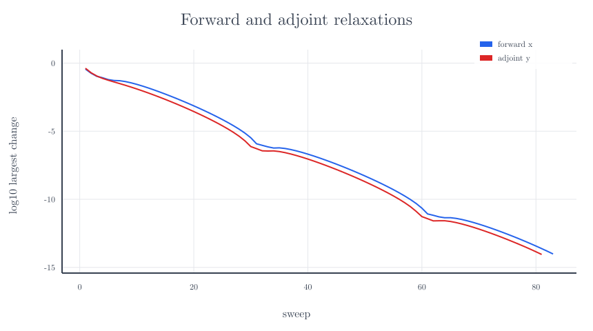
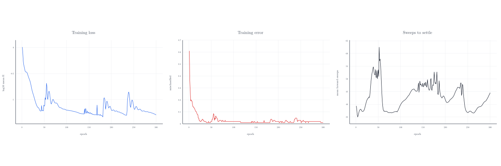

Almeida-Pineda: Backpropagation Through a Fixed Point
Abstract
A recurrent network whose units feed back into each other computes by
settling: its output is a fixed point \(x=\tanh(Wx)\), not the end of a
forward sweep. Almeida and Pineda showed in 1987 how to train such a network
without unrolling it in time. Settle the network forward. Then settle a second,
linear adjoint system that runs on the transposed weights. The gradient is the
outer product of the two equilibria. We derive the adjoint equation from the
implicit function theorem and prove that the adjoint converges at exactly the
forward relaxation's rate. Both claims are checked numerically: the gradient
matches central finite differences to \(3\times10^{-10}\), and both residual
curves contract by the same factor, 0.674 per sweep. A fully recurrent network
with five hidden units, trained on the iris data from dm::datasets::iris(),
misclassifies 1 of 45 test flowers, as LDA does. It settles in about 40 sweeps
per flower. Of 31 500 training gradients, 18 (0.06%) had a relaxation that
failed to converge, in short bursts while the weights moved fastest.
Networks that settle
Take \(N\) units. The first \(m\) are clamped to the input: a constant bias unit and the predictors. The others are free. Every free unit \(i\) receives every other unit through a weight \(W_{ij}\), so hidden and output units feed back into each other. The network's response to an input is a fixed point of
*Existence.* \(\tanh\) maps into \([-1,1]\), so the map \(x\mapsto\tanh(Wx)\) sends the cube \([-1,1]^{N-m}\) into itself. By Brouwer's theorem it has a fixed point.
*Uniqueness and convergence.* Suppose \(\|W_{ff}\|\cdot\max f'<1\), where \(W_{ff}\) is the free-to-free block. Then the map is a contraction, so the fixed point is unique and the iteration converges to it from anywhere, by Banach's theorem. Since \(f'\le1\), a sufficient condition is \(\|W_{ff}\|<1\). Training does not enforce this, but the networks below still converge, and the library reports any relaxation that fails to.
The relaxation uses synchronous, damped sweeps, \(x\leftarrow(1-\rho)x+\rho\tanh(Wx)\) with \(\rho=\tfrac12\). Near the fixed point the error contracts each sweep by the spectral radius of \((1-\rho)I+\rho DW_{ff}\), where \(D=\operatorname{diag}f'(a)\).
The gradient from the implicit function theorem
Let the output units carry targets \(t_k\), with error \(E=\tfrac12\sum_k(x_k-t_k)^2\) and \(e_i=x_i-t_i\) on output units (zero elsewhere). The fixed point satisfies \(F(x,W)=x-f(Wx)=0\). Differentiating gives
provided \(I-DW\) is invertible, which holds when the fixed point is stable. Then \(dE=e^\top dx\). Define the adjoint vector \(y\) by \(y^\top=e^\top(I-DW)^{-1}D\). Then \(dE=y^\top(dW)\,x\), so
To check the second equation, let \(z=D^{-1}y\). The definition gives \(z^\top(I-DW)=e^\top\), so \(z=W^\top Dz+e=W^\top y+e\). The adjoint is itself a fixed-point equation. It is linear, and it can be solved by the same kind of relaxation, run backwards through the transposed weights, with no stored history. That is the whole algorithm: settle \(x\), settle \(y\), take the outer product.
*Theorem (equal rates).* The undamped adjoint iteration \(y\leftarrow D(W^\top y+e)\) has iteration matrix \(DW^\top\). Now
so \(DW^\top\) is similar to \(W^\top D=(DW)^\top\), whose eigenvalues are those of the forward Jacobian \(DW\). With damping, both matrices take the form \((1-\rho)I+\rho M\). So if the forward relaxation is locally stable, the adjoint converges too, and at the same asymptotic rate. This is Almeida's stability result. \(\square\)
algorithms::almeida_pineda_settle and almeida_pineda_gradient expose both
relaxations and their residuals. stats::AlmeidaPinedaClassifier wraps them as
a classifier fitted from a formula and a DataFrame.
Checking the gradient and the rates
The test network has 3 clamped units, 5 free units and 2 outputs, with random weights. The table compares the Almeida-Pineda gradient with central differences \((E(W+h)-E(W-h))/2h\), \(h=10^{-6}\), for every weight. The figure plots the largest change per sweep in the forward and adjoint relaxations.
#include <dm/dm.hpp>
namespace alg = dm::algorithms;
int main() {
std::filesystem::create_directories("build");
const auto net = alg::almeida_pineda_network(8, 3, {6, 7}, 0.5, 2026);
const std::vector<double> input{1.0, 0.7, -1.2}, target{0.6, -0.4};
const alg::AlmeidaPinedaSettleOptions options{5000, 1e-14, 0.5};
const auto g = alg::almeida_pineda_gradient(net, input, target, options);
double worst = 0.0, largest = 0.0;
int checked = 0;
for (std::size_t i = 3; i < 8; ++i)
for (std::size_t j = 0; j < 8; ++j) {
if (i == j) continue;
auto plus = net, minus = net;
plus.W[i][j] += 1e-6;
minus.W[i][j] -= 1e-6;
const double fd =
(alg::almeida_pineda_gradient(plus, input, target, options).error -
alg::almeida_pineda_gradient(minus, input, target, options).error) /
2e-6;
worst = std::max(worst, std::abs(fd - g.dW[i][j]));
largest = std::max(largest, std::abs(g.dW[i][j]));
++checked;
}
std::print("| quantity | value |\n| :--- | ---: |\n");
std::print("| error E | {:.6f} |\n", g.error);
std::print("| weights checked | {} |\n", checked);
std::print("| largest gradient entry | {:.4e} |\n", largest);
std::print("| largest difference from finite differences | {:.2e} |\n",
worst);
std::print("| forward sweeps to 1e-14 | {} |\n", g.forward.iterations);
std::print("| adjoint sweeps to 1e-14 | {} |\n", g.adjoint_iterations);
// Mean contraction per sweep over sweeps 15..75 (the per-sweep ratio oscillates; see below).
auto rate = [](const std::vector<double> & r) {
return std::pow(r[75] / r[15], 1.0 / 60);
};
std::print("| forward contraction per sweep, sweeps 15-75 | {:.4f} |\n",
rate(g.forward.residuals));
std::print("| adjoint contraction per sweep, sweeps 15-75 | {:.4f} |\n",
rate(g.adjoint_residuals));
std::vector<double> kf, rf, ka, ra;
for (std::size_t k = 0; k < g.forward.residuals.size(); ++k)
if (g.forward.residuals[k] > 0)
kf.push_back(k + 1.0), rf.push_back(std::log10(
g.forward.residuals[k]));
for (std::size_t k = 0; k < g.adjoint_residuals.size(); ++k)
if (g.adjoint_residuals[k] > 0)
ka.push_back(k + 1.0), ra.push_back(std::log10(
g.adjoint_residuals[k]));
dm::graphics::RPlot::create().lines(kf, rf, "forward x",
dm::RGB{37, 99, 235}, 2.0).lines(
ka, ra, "adjoint y", dm::RGB{220, 38, 38}, 2.0).title(
"Forward and adjoint relaxations").x_label("sweep").y_label(
"log10 largest change").size(860, 480).save_svg(
"build/almeida_pineda_residuals.svg");
}| quantity | value |
|---|---|
| error E | 1.173263 |
| weights checked | 35 |
| largest gradient entry | 1.2145e+00 |
| largest difference from finite differences | 2.98e-10 |
| forward sweeps to 1e-14 | 83 |
| adjoint sweeps to 1e-14 | 81 |
| forward contraction per sweep, sweeps 15-75 | 0.6738 |
| adjoint contraction per sweep, sweeps 15-75 | 0.6737 |

All 35 weights agree with finite differences to \(3\times10^{-10}\). Central differences with \(h=10^{-6}\) have truncation error of order \(h^2\) and rounding error of order \(\epsilon/h\), so that is the expected accuracy. The gradient is exact up to the relaxation tolerance.
Both residual curves fall with the same overall slope, as the theorem requires. Both also dip together about every 30 sweeps, because the dominant eigenvalues of \(DW\) are a complex pair: the per-sweep ratio oscillates around the modulus. Averaged over 60 sweeps, both relaxations contract by the same factor, 0.674 per sweep.
Classifying iris flowers
dm::datasets::iris() has 150 flowers, three species and four measurements. The
network has:
- 1 bias unit and 4 standardised inputs, all clamped;
- 5 hidden units and 3 output units, one per species, all free.
That makes 13 units and \(8\times12=96\) weights, since free units have no self-loops. The targets are \(+0.8\) for the true species and \(-0.8\) for the other two. Training runs 300 epochs of full-batch gradient descent with momentum 0.9, on 105 flowers stratified by species. The other 45 are held out.
#include <dm/dm.hpp>
int main() {
std::filesystem::create_directories("build");
const auto[train, test] =
dm::stats::train_test_split(dm::datasets::iris(), 0.3, 1, "Species");
const dm::stats::AlmeidaPinedaClassifier model(train, "Species ~ .");
const dm::stats::LDA lda(train, "Species ~ .");
const auto lda_pred = lda.predict(test);
const auto &truth = test.get_column<std::string>("Species").values();
double lda_wrong = 0;
for (std::size_t i = 0; i < truth.size(); ++i)
lda_wrong += lda_pred[i] != truth[i];
const auto history = model.history();
std::print("Training rows {}, test rows {}, weights {}\n\n",
model.observations(), truth.size(), 8 * 12);
std::print("{}\n", history | dm::filter_rows([](const auto &row) {
const double e =
row.get_double("epoch"); return e == 1 || e == 10 || e == 25 ||
e == 50 || e == 100 || e == 200 || e == 300;
}) | dm::to_md(4));
std::print("| model | training error | test error |\n| :--- | ---: | ---: |\n");
std::print("| Almeida-Pineda network | {:.3f} | {:.3f} |\n",
model.error(train), model.error(test));
std::print("| LDA | {:.3f} | {:.3f} |\n\n", 1.0 - lda.training_accuracy(),
lda_wrong / truth.size());
double unconverged = 0;
std::vector<int> epochs_hit;
for (std::size_t r = 0; r < history.nrows(); ++r)
if (history.double_at("unconverged", r) > 0) {
unconverged += history.double_at("unconverged", r);
epochs_hit.push_back(static_cast<int>(history.double_at("epoch", r)));
}
std::print("Relaxations that hit the 500-sweep limit, over all {} x {} training gradients: {}, in epochs {}\n\n",
history.nrows(), model.observations(), unconverged,
epochs_hit);
std::print("Test confusion matrix (rows: actual, columns: predicted):\n\n{}\n",
model.confusion(test) | dm::to_md(0));
const auto epoch = history.get_column<double>("epoch").values();
std::vector<double> log_loss, iters;
for (std::size_t r = 0; r < history.nrows(); ++r) {
log_loss.push_back(std::log10(history.double_at("loss", r)));
iters.push_back(history.double_at("mean_iterations", r));
}
auto layout = dm::graphics::RLayout::create(1, 3);
layout.add(dm::graphics::RPlot::create().lines(epoch, log_loss, "",
dm::RGB{37, 99, 235}, 2.0).title("Training loss").x_label("epoch").y_label("log10 mean E"));
layout.add(dm::graphics::RPlot::create().lines(epoch,
history.get_column<
double>("train_error").values(),
"", dm::RGB{220, 38, 38},
2.0).y_limits(0, 0.7).title("Training error").x_label("epoch").y_label("misclassified"));
layout.add(dm::graphics::RPlot::create().lines(epoch, iters, "",
dm::RGB{17, 24, 39}, 2.0).title("Sweeps to settle").x_label("epoch").y_label("mean forward sweeps"));
layout.size(1200, 400).save_svg("build/almeida_pineda_training.svg");
}Training rows 105, test rows 45, weights 96
| epoch | loss | train_error | mean_iterations | max_iterations | unconverged |
|---|---|---|---|---|---|
| 1 | 1.0177 | 0.6095 | 39.3333 | 43 | 0 |
| 10 | 0.3390 | 0.1429 | 38.0381 | 40 | 0 |
| 25 | 0.1285 | 0.0190 | 41.7905 | 49 | 0 |
| 50 | 0.0751 | 0.0190 | 53.6286 | 500 | 1 |
| 100 | 0.0627 | 0.0190 | 39.8667 | 75 | 0 |
| 200 | 0.0632 | 0.0190 | 41.6857 | 110 | 0 |
| 300 | 0.0508 | 0.0095 | 44.5333 | 218 | 0 |
| model | training error | test error |
|---|---|---|
| Almeida-Pineda network | 0.010 | 0.022 |
| LDA | 0.010 | 0.022 |
Relaxations that hit the 500-sweep limit, over all 300 x 105 training gradients: 18, in epochs [47, 50, 52, 53, 54, 140, 145, 146, 156, 167, 168, 175, 181, 186, 234, 235]
Test confusion matrix (rows: actual, columns: predicted):
| actual | setosa | versicolor | virginica |
|---|---|---|---|
| setosa | 15 | 0 | 0 |
| versicolor | 0 | 14 | 1 |
| virginica | 0 | 0 | 15 |

Training behaves like any small neural network:
- *Loss and error.* The loss falls twentyfold, from 1.02 to 0.05. Training error drops from 61% at the random start to 1 or 2 flowers within 25 epochs.
- *Test performance.* One test flower is misclassified: a versicolor called virginica, the boundary every linear method struggles with. LDA on the same split makes the same number of errors.
- *Settling.* The mean number of sweeps per flower stays between about 35 and 60. Single flowers occasionally take much longer: 218 sweeps at epoch 300.
- *Occasional failures.* In 18 of the 31 500 training gradients, a relaxation hit the 500-sweep limit. They come in bursts, around epochs 47 to 54, 140 to 186, and 234 to 235, where one or two flowers sit near a bifurcation of the dynamics. Each contributes a slightly wrong gradient for one flower in one epoch, and momentum averages these out. These are also the epochs where the loss jumps and the mean number of sweeps rises, in the left and right panels. A slowly converging relaxation is the visible sign of a fixed point close to losing stability. A deep-equilibrium implementation would switch to a root finder at such points.
What the network settles to
The table shows the equilibrium of the three output units for a few test flowers, with the number of sweeps each needed. The prediction is the largest output.
#include <dm/dm.hpp>
int main() {
const auto[train, test] =
dm::stats::train_test_split(dm::datasets::iris(), 0.3, 1, "Species");
const dm::stats::AlmeidaPinedaClassifier model(train, "Species ~ .");
auto out = model.outputs(test);
out.add_column("Species", test.get_column<std::string>("Species").values());
out.add_column("predicted", model.predict(test));
const auto view =
out |
dm::select("Species", "predicted", "setosa", "versicolor", "virginica",
"iterations");
std::print("{}\n", view | dm::slice_head(8) | dm::to_md(3));
const auto wrong = view | dm::filter_rows([](const auto &row) {
return row.get_string("Species") != row.get_string("predicted");
});
std::print("Misclassified test flowers:\n\n{}\n", wrong | dm::to_md(3));
}| Species | predicted | setosa | versicolor | virginica | iterations |
|---|---|---|---|---|---|
| setosa | setosa | 0.996 | -0.812 | -1.000 | 33 |
| setosa | setosa | 0.979 | -0.824 | -1.000 | 35 |
| setosa | setosa | 0.992 | -0.823 | -1.000 | 33 |
| setosa | setosa | 0.999 | -0.791 | -1.000 | 33 |
| setosa | setosa | 1.000 | -0.754 | -1.000 | 33 |
| setosa | setosa | 0.999 | -0.789 | -1.000 | 33 |
| setosa | setosa | 0.994 | -0.838 | -1.000 | 33 |
| setosa | setosa | 0.987 | -0.825 | -1.000 | 33 |
Misclassified test flowers:
| Species | predicted | setosa | versicolor | virginica | iterations |
|---|---|---|---|---|---|
| versicolor | virginica | -0.999 | -0.799 | 0.863 | 50 |
The setosa flowers settle with their own output near \(+1\) and the virginica output pinned at \(-1.000\), beyond the \(-0.8\) target. The squared error is mild enough that the network does not pull a confident output back to the target. The misclassified versicolor settles with its virginica output at \(+0.86\) and its versicolor output at \(-0.80\). That is a confident mistake, and it takes 50 sweeps, longer than the 33 of a typical setosa.
Cost
Each gradient costs two relaxations of \(s\) sweeps each, at \(O(N^2)\) per sweep, and stores only \(x\), \(y\) and \(W\): \(O(N^2)\) memory. Backpropagation through time on the same network would unroll \(s\) steps, storing all \(s\) states and spending the same \(O(sN^2)\) time. It would also differentiate the transient rather than the fixed point. Almeida-Pineda's memory saving is the idea behind modern deep equilibrium models. These solve the forward fixed point with a faster root finder, and the adjoint by the same implicit-function argument.
The method needs the fixed point to exist and be stable. If training drives the
weights into oscillation, neither relaxation converges and the gradient is
meaningless. The classifier records the number of non-converged relaxations in
every epoch of history() for this reason.
Summary
- A recurrent network computes by settling to \(x=\tanh(Wx)\). Brouwer gives a fixed point, and a contraction makes it unique and reachable by relaxation.
- The implicit function theorem gives \(\partial E/\partial W_{ij}=y_ix_j\), where \(y=D(W^\top y+e)\) is the fixed point of a linear adjoint relaxation through the transposed weights. The adjoint iteration matrix is similar to the transposed forward Jacobian, so the two relaxations converge at the same rate.
- Numerically, the gradient matches finite differences to \(3\times10^{-10}\), and the forward and adjoint residuals contract by the same factor, 0.674 per sweep, dips included.
- On iris, a 13-unit recurrent network trained this way matches LDA's test
error, 1 of 45. Each flower settles in about 40 sweeps. Only 18 of 31 500
training gradients (0.06%) met a relaxation that failed to converge, and
history()reports them.
References
- L. B. Almeida (1987). A learning rule for asynchronous perceptrons with feedback in a combinatorial environment. Proceedings of the IEEE First International Conference on Neural Networks II, 609--618.
- F. J. Pineda (1987). Generalization of back-propagation to recurrent neural networks. Physical Review Letters 59(19), 2229--2232.
- S. Bai, J. Z. Kolter, V. Koltun (2019). Deep equilibrium models. Advances in Neural Information Processing Systems 32.